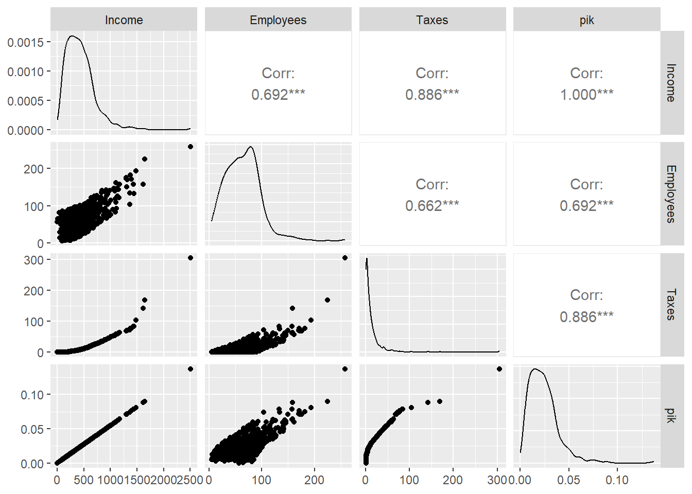
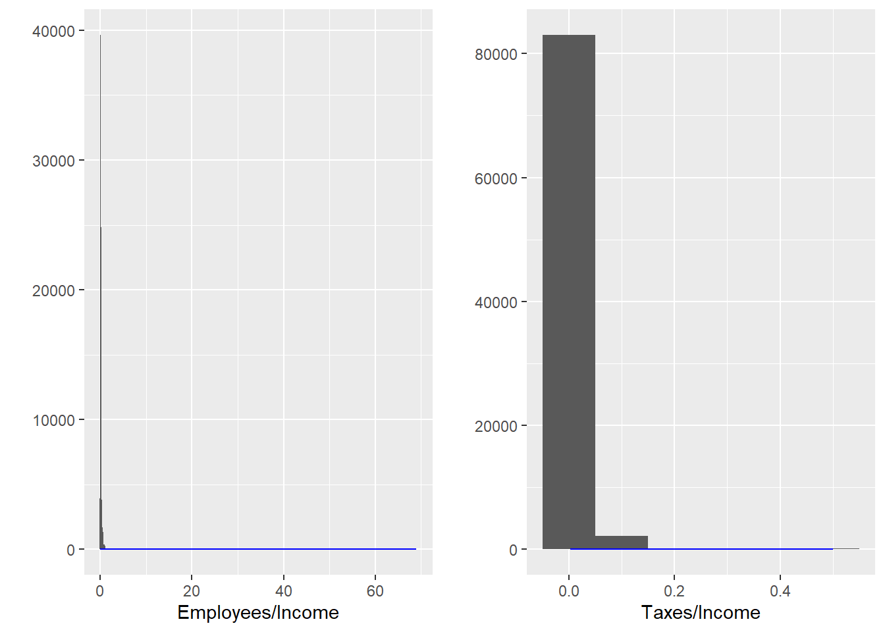
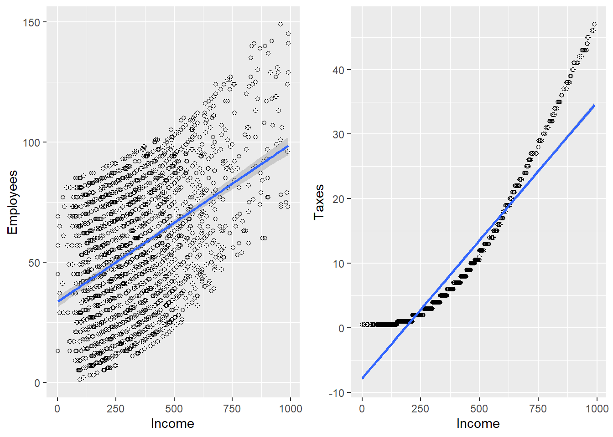

data(BigLucy)
dim(BigLucy)[1] 85296 11It is well known that the sampling strategy that uses a simple random sampling design with the Horvitz-Thompson estimator is an optimal sampling strategy, under certain formulations, when there is prior knowledge that the population behavior is symmetric with respect to the labels. In such cases, incorporating auxiliary information does not improve that strategy.
Cassel et al. (1976)
The sampling strategies implemented in the previous chapter used selection methods in which the inclusion probability or selection probability is identical for all population elements, and the parameters of interest were estimated using the Hansen-Hurwitz estimator for sampling designs with replacement and the Horvitz-Thompson estimator for sampling designs without replacement. Those strategies do not take into account the innate variation of the characteristics of interest across population units. Therefore, because of their generic construction and the principle of representativeness, those estimators will tend to have high variation.
Raj (1968) states that, in terms of precision, greater gains can be obtained when sampling designs with unequal probabilities are used. In most practical cases, the characteristic of interest does not behave uniformly with respect to the population labels. However, when the sampling frame available for sample selection contains, in addition to the identification and location of the population elements, a continuous auxiliary characteristic available for every element in the population \(x_k \ \ \ \forall k \in U\), it is possible to use sampling designs that implement selection methods whose selection or inclusion probabilities, depending on the case, are proportional to the total of the auxiliary characteristic, \(t_x\).
This sampling design is a generalization of the Bernoulli sampling design, in which the inclusion probabilities are specified a priori and independently for each individual. Brewer (2002) indicates that this sampling design originally had no practical implication, because the sample size is not fixed; instead, it was used theoretically to describe the properties of other estimators. The first practical case appeared in the selection of samples of trees in forest units; later it was applied in the annual manufacturing census in the United States. Although this sampling design does not use auxiliary information for sample selection, it serves as a starting point for examining more complex sampling designs that do use it.
Let \(\pi_k\) be a positive number, such that \(0< \pi_k \leq 1\), representing the inclusion probability of the \(k\)-th element. The Poisson sampling design is defined as follows \[ p(s)= \prod_{k\in s}\pi_k\prod_{k\notin s}(1-\pi_k) \ \ \ \ \text{for all $s \in Q$} \tag{4.1}\] where \(Q\) is the support containing all possible samples without replacement.
For this sampling design, the support \(Q\) has cardinality equal to \[ \#(Q)=2^N \]
In our example population \[U=\{\text{Yves},\text{Ken},\text{Erik},\text{Sharon},\text{Leslie}\}\] The inclusion probabilities \(\pi_k\) are 0.2, 0.5, 0.7, 0.5, and 0.9, respectively. The possible samples may have size 0, 1, 2, 3, 4, or 5. The probability of the sample of size 0 is \[(1-0.2)\times(1-0.5)\times(1-0.7)\times(1-0.5)\times(1-0.9)=0.006\] Following the same analogy, the lexical-graphic calculation for the selection probabilities of all possible samples in the support of this sampling design is presented below. For the possible samples of sizes 1 and 4, their respective probabilities are:
s p(s) | s p(s)
Yves 0.0015 | Yves, Ken, Erik, Sharon 0.0035
Ken 0.006 | Yves, Erik, Sharon, Leslie 0.0315
Erik 0.014 | Yves, Ken, Erik, Leslie 0.0315
Sharon 0.006 | Yves, Ken, Sharon, Leslie 0.0135
Leslie 0.054 | Ken, Erik, Sharon, Leslie 0.126
Total 0.0815 | Total 0.206The possible samples of sizes 2 and 3 and their respective probabilities are:
s p(s) | s p(s)
Yves, Ken 0.0015 | Yves, Ken, Erik 0.0035
Yves, Erik 0.0035 | Yves, Ken, Sharon 0.0015
Yves, Sharon 0.0015 | Yves, Ken, Leslie 0.0135
Yves, Leslie 0.0135 | Yves, Erik, Sharon 0.0035
Ken, Erik 0.014 | Yves, Erik, Leslie 0.0315
Ken, Sharon 0.006 | Yves, Sharon, Leslie 0.0135
Ken, Leslie 0.054 | Ken, Erik, Sharon 0.014
Erik, Sharon 0.014 | Ken, Erik, Leslie 0.126
Erik, Leslie 0.126 | Ken, Sharon, Leslie 0.054
Sharon, Leslie 0.054 | Erik, Sharon, Leslie 0.126
Total 0.288 | Total 0.387Finally, the sample of size 5, \(\{\text{Yves},\text{Ken},\text{Erik},\text{Sharon},\text{Leslie}\}\), has probability 0.0315. Note that the sum over all possible samples is \(\sum p(s)=1\).
Bautista (1998) states that prior knowledge of the elements’ inclusion probabilities is such that, on some occasions, there are population elements that must necessarily be observed in the sample; in these cases, the inclusion probability of those elements is equal to one (\(\pi_k=1\)). The population subgroup whose elements have inclusion probability equal to one is known as the certainty inclusion subgroup. Note that the sample selection algorithm used must account for the inclusion, in all possible selected samples, of all elements in the certainty inclusion subgroup.
The selection of a sample under a Poisson sampling design is carried out through a sequential algorithm defined similarly to the algorithm used to select samples under a Bernoulli sampling design. - Set, for each \(k \in U\), the value of the inclusion probability \(\pi_k\) such that \(0<\pi_k\leq1\). - Obtain \(\varepsilon_k\) for \(k\in U\) as \(N\) independent realizations of a random variable with uniform distribution on the interval \([0,1]\). - The \(k\)-th element belongs to the sample with probability \(\pi_k\). That is, if \(\varepsilon_k < \pi\) the \(k\)-th individual is selected.
Since \(\varepsilon_k\sim Unif[0,1]\), we have \(Pr(\varepsilon_k < \pi_k)=\pi_k\) for \(k\in U\). Therefore, the inclusion of the \(k\)-th and \(l\)-th individuals, for \(k\neq l\), is independent; however, the distribution of \(I_k(S)\) is not Binomial because the random variables \(I_k(S)\) are not identically distributed.
Under Poisson sampling, the sample size \(n(S)\) is a random variable such that \[ E(n(S))=\sum_U \pi_k \ \ \ \ \ \ \ \ \ Var(n(S))=\sum_U\pi_k(1-\pi_k) \]
Proof.
Using Result 2.1.4 and the properties of a sum of squares, it is enough to prove that \(\pi_{kl}=Pr(k\in S, l \in S )=\pi_k\pi_l\) for \(k\neq l\), which follows immediately because the random variables \(I_k(S)\) and \(I_l(S)\) are independent.
For the Poisson sampling design, the first- and second-order inclusion probabilities are given by: \[ \begin{align} \pi_k&=\pi_k\\ \pi_{kl}&= \begin{cases} \pi_k &\text{for $k=l$}\\ \pi_k\pi_l &\text{otherwise} \end{cases} \end{align} \] respectively.
For the Poisson sampling design, the Horvitz-Thompson estimator, its variance, and its estimated variance are given by: \[ \hat{t}_{y,\pi}=\sum_S\frac{y_k}{\pi_k} \] \[ Var_{PO}(\hat{t}_{y,\pi})=\sum_U\left(\frac{1}{\pi_k}-1\right)y_k^2 \] \[ \widehat{Var}_{PO}(\hat{t}_{y,\pi})=\sum_S (1-\pi_k)\left(\frac{y_k}{\pi_k}\right)^2 \] respectively.
Proof.
Using Result 2.2.2, the proof follows immediately because \[ \Delta_{kl}=\begin{cases} \pi_{kl}-\pi_k\pi_l=\pi_k\pi_l-\pi_k\pi_l=0 & \text{for $k\neq l$}\\ \pi_{kk}-\pi_k^2=\pi_k(1-\pi_k) & \text{for $k=l$} \end{cases} \] therefore the double sum in the variance of the Horvitz-Thompson estimator becomes a single sum. The proof for the variance estimator is carried out analogously.
For our example population \(U\), suppose that the individual Erik must be in the selected sample; that is, \(\pi_{Erik}=1\). Therefore, there are \(\binom{1}{1}2^4=16\) possible samples. If the vector of inclusion probabilities for each population element is given by \((0.5, 0.2, 1, 0.9, 0.5)\), carry out the lexical-graphic calculation of the Horvitz-Thompson estimator and verify unbiasedness, the variance, and the properties of the sampling design.
As mentioned in previous chapters, a sampling strategy that uses the Horvitz-Thompson estimator is optimal when the inclusion probabilities induced by the sampling design are positively correlated with the characteristic of interest; in other words, when \(\pi_k \propto y_k\). In this ideal case, and if the sampling design is assumed to have fixed sample size \((n(S)=n)\), the Horvitz-Thompson estimator would reproduce the parameter of interest \(t_y\) with zero variance when the inclusion probabilities take the form \(\pi_k=n\frac{y_k}{t_y}\). Thus, the strategy used would be representative with respect to the variable of interest, because for any selected sample, the Horvitz-Thompson estimator would be equal to \(t_y\).
Assuming a fixed sample size under a Poisson sampling design, the variance of the Horvitz-Thompson estimator is minimized when \[ \begin{align} \pi_k=\frac{ny_k}{\sum_Uy_k} \end{align} \tag{4.2}\]
Proof.
The objective is to find values of \(\pi_k\), such that \(0<\pi_k\leq 1\), that minimize the variance of the Horvitz-Thompson estimator under the Poisson sampling design. This is achieved when a census is conducted, that is, when \(\pi_k=1\) for all \(k\in U\). However, in practice one wants to select a sample with size smaller than N. Therefore, minimizing \(Var_{PO}(\hat{t}_{y,\pi})\) is equivalent to minimizing \(\sum_U\frac{y_k^2}{\pi_k}\) subject to the fixed-sample-size constraint, such that \(\sum_U\pi_k=n\). Thus, the quantity to minimize is given by the following product \[ \left(\sum_U \frac{y_k^2}{\pi_k}\right)\left(\sum_U\pi_k\right) \] One solution to the previous problem is to use the Cauchy-Schwarz inequality; therefore, \[ \begin{align*} \left(\sum_U \frac{y_k^2}{\pi_k}\right)\left(\sum_U\pi_k\right)\geq\left(\sum_Uy_k\right)^2 \end{align*} \] with equality when \(\dfrac{y_k}{\pi_k}=c\), with \(c\) a constant. Now, we have \[ \begin{align*} n=\sum_U\pi_k=\sum_U\frac{y_k}{c} \end{align*} \] Then, \[ c=\sum_U\frac{y_k}{n} \] Therefore, \[ \begin{align*} \pi_k=\frac{ny_k}{\sum_Uy_k} \end{align*} \]
The preceding result is ambiguous because this choice of inclusion probabilities assumes that the characteristic of interest is known for the entire population. If that were the case, there would be no need to estimate \(t_y\). However, Särndal et al. (1992) state that because the Poisson sampling design has variable sample size, it is inefficient; using the previous reasoning would imply that the Horvitz-Thompson estimator takes the following form \[ \hat{t}_{y,\pi}=\sum_S\frac{y_k}{\pi_k}=\frac{t_y}{n}\sum_S1=t_y\frac{n(S)}{n} \]
Therefore, the variation of the estimator calculated in each sample would be given by the variation of the expected sample size \(n(S)\). The previous reasoning leads us to think that the Horvitz-Thompson estimator would perform excellently under sampling designs such that \(\pi_k \propto y_k\) and that induce fixed-size samples. On the other hand, if the sampling frame has the virtue of attaching continuous auxiliary information through a characteristic \(x_k\) (in other words, knowing the vector of auxiliary characteristics \(x_1,x_2,...,x_N\) before sampling) that is very well correlated with the variable of interest, then the variance of the sampling strategy would be minimal when \[ \begin{align} \pi_k=n\frac{x_k}{\sum_Ux_k} \end{align} \]
On the other hand, following the same reasoning as in the Bernoulli sampling design, since a sampling frame of elements is available, the population size \(N\) is known. Thus, an estimator for the population total of the characteristic of interest with smaller variance is the so-called alternative estimator given by expression (2.2.18), which in the particular case of Poisson sampling takes the following form \[ \hat{t}_{y,alt}=\hat{t}_{y,\pi}\frac{N}{\hat{N}_{\pi}} \]
To estimate the population mean, it is possible to use this same reasoning and, together with expression (2.2.15), obtain a less dispersed estimator \[ \tilde{y}_S=\frac{\hat{t}_{y,\pi}}{\hat{N}_{\pi}} \]
The structural form of the preceding estimators is a ratio, a quotient of two random quantities, and thus part of the variability of the Horvitz-Thompson estimator that comes from the fact that the sample size is not fixed for this design is reduced.
Although this sampling strategy was not used in a practical sense and has high variance because the sample size is variable, it is possible to obtain good results that encourage the use of sampling strategies with probability proportional to size. First, it must be assumed that the sampling frame contains a continuous auxiliary characteristic that will be used in the design and sample selection stage.
Raj (1968) points out that in the specific case of an agricultural population, an auxiliary characteristic may be the cultivated area; for households, an auxiliary characteristic may be the number of people living in the household. Lehtonen and Pahkinen (2003) give clear examples of auxiliary characteristics in business surveys and state that, in this particular case, a commonly used auxiliary characteristic is the number of employees in the firm; for school surveys, an auxiliary characteristic is the number of students. In hospital surveys, Bautista (1998) states that an auxiliary characteristic is the number of beds per hospital, not the number of patients, because the latter has high variation and is linked to the season in which the survey is conducted.
Recall that the goal is to estimate three totals for the characteristics of interest Income, Employees, and Taxes from the last fiscal period among firms in the industrial sector. For practical purposes, suppose that the sampling frame contains all records for each firm in the industrial sector for the Income characteristic; in this way, the population totals for Employees and Taxes can be estimated. For academic purposes, the population total of the Income characteristic will also be estimated, emphasizing that doing so is ambiguous because if all population values of the characteristic of interest are known, there is no need to estimate what is already known; however, as an academic exercise it is completely admissible.
With the preceding assumptions, the sampling frame is loaded into the R programming environment. Note that the sampling frame now contains five columns: four referring to identification and/or geographic location, and one column containing the records for the Income characteristic.
data(BigLucy)
dim(BigLucy)[1] 85296 11The inclusion probabilities must be created and are given by (equation 4.2). Note that an expected sample size must be set. To make the results comparable, an expected sample size of \(n(S)=400\) will be used. Once the inclusion probabilities for all firms in the industrial sector have been created, it must be verified that each one is less than one; for this, the which function, implemented in base R, is used, and its output is a set of indices for which the instruction inside the parentheses is true. When no index satisfies (pik>1), the function returns integer(0). However, if there were any record for which (pik>1) were true, the respective inclusion probabilities should be converted to one.
N <- dim(BigLucy)[1]
n <- 2000
pik <- n * BigLucy$Income / sum(BigLucy$Income)
which(pik > 1)integer(0)sum(pik)[1] 2000Note that the sum of the inclusion probabilities is equal to the expected sample size. The correlation between the inclusion probabilities induced by this Poisson sampling design is good. Of course, the correlation between the \(\pi_k\) and the income variable is one, because the former are a linear function of Income. Now, the amount of taxes that firms in the industrial sector declare in a fiscal year is proportional to their income; in fact, if a firm has zero profits, it will declare zero taxes. On the other hand, although a firm may have zero profits, it will not necessarily have zero employees; in fact, in the industrial sector there are cases in which a firm with few employees has higher income than a firm with many employees. However, this particularity does not occur generally; if it did, the correlation would be negative and the auxiliary characteristic Income should not be used in estimating the total of the characteristic of interest Employees.
cor(pik, cbind(BigLucy$Income, BigLucy$Employees, BigLucy$Taxes)) [,1] [,2] [,3]
[1,] 1 0.64 0.92figure 4.1 shows the scatterplot matrix of the three variables of interest against the vector of inclusion probabilities.
analysis_data <- data.frame(
Income = BigLucy$Income,
Employees = BigLucy$Employees,
Taxes = BigLucy$Taxes,
pik = pik
)
To select the sample under a Poisson sampling design, the S.PO function from the TeachingSampling package is used. This function has two arguments: N, the population size, and pik, the vector of inclusion probabilities for each population element. In our case, pik is the vector of probabilities created previously; in general, however, any vector of numbers between zero and one may be used. The S.PO function returns a set of indices that, when applied to the population, yields the values of the characteristics of interest for each member of the selected sample.
sam <- S.PO(N, pik)
sample_data <- BigLucy[sam, ]
attach(sample_data)
sam <- S.PO(N, pik)
sample_data <- BigLucy[sam, ]
attach(sample_data)
head(sample_data) ID Ubication Level Zone Income Employees Taxes SPAM
26 AB0000000026 C0085712K0216185 Small County1 380 38 6 no
195 AB0000000195 C0212041K0089856 Small County1 230 23 2 yes
411 AB0000000411 C0137325K0164572 Small County1 343 60 5 no
422 AB0000000422 C0230110K0071787 Small County1 319 83 4 yes
506 AB0000000506 C0137341K0164556 Small County1 247 75 2 yes
740 AB0000000740 C0013086K0288811 Small County17 440 74 8 no
ISO Years Segments
26 no 6.5 County1 3
195 no 7.0 County1 20
411 no 18.2 County1 42
422 no 24.0 County1 43
506 no 18.8 County1 51
740 no 43.7 County17 13n.s <- dim(sample_data)[1]
n.s[1] 2066In this particular case, the first selected firm is the one identified with number AB0000000026. Note that the sampling frame includes the auxiliary characteristic Income and that the effective sample size is 2066. Once fieldwork has concluded, the estimation stage begins, where the E.PO function from the TeachingSampling package will be used. This function has two arguments: the matrix or vector of values of the characteristic(s) of interest, and pik.s, the values of the inclusion probability vector for each element selected in the sample. In this particular case, a data set with the sample information for the characteristics of interest, called target_variables, is created. Note that the length of the vector pik.s is 2066. The E.PO function returns the estimates of the population total, the estimated variance, and the corresponding coefficient of variation of the characteristic(s) of interest.
pik.s <- pik[sam]
target_variables <- data.frame(
Income = sample_data$Income,
Employees = sample_data$Employees,
Taxes = sample_data$Taxes
)
E.PO(target_variables, pik.s)table 4.1 shows the particular results for this sampling strategy. Note that the Taxes characteristic has a smaller coefficient of variation because it is much better correlated with the vector of inclusion probabilities, whereas the Employees characteristic has a larger coefficient of variation. From a purely academic point of view, it is reasonable to state that the sampling strategy used can be optimized if a sampling design is used with inclusion probabilities proportional to the size of some auxiliary characteristic, but that induces fixed-size samples. Note that, although the inclusion probability vector has a correlation of one with respect to the Income characteristic, the estimated coefficient of variation for it is 2.16%, a figure that is not high, but that does not justify the cost of using this auxiliary information in the design stage. Notice that the coefficients of variation are slightly lower than when using a Bernoulli sampling design, but not lower than those obtained when using a simple random sampling design.
| N | Income | Employees | Taxes | |
|---|---|---|---|---|
| Estimation | 90123.4 | 37843679.2 | 5531560.3 | 1020115.30 |
| Standard Error | 2456.4 | 819232.4 | 142396.1 | 25470.08 |
| CVE | 2.7 | 2.2 | 2.6 | 2.50 |
| DEFF | Inf | 1.7 | 3.5 | 0.24 |
Continuing the reasoning introduced in the previous section, Bautista (1998) states that in a sampling design with replacement, the optimal values of the selection probabilities for each population element would have to be given by
\[ p_k=\frac{y_k}{t_y}. \]
Of course, with this choice, the Hansen-Hurwitz estimator would estimate the population total of the characteristic of interest with zero variance. Otherwise, the sample size needed to obtain an estimate with zero bias would be \(m=1\). Note that, by (equation 2.10), the Hansen-Hurwitz estimator is an average of \(m\) estimates. With the preceding choice of selection probabilities, and with a sample size of \(m=1\), we have
\[ \begin{align*} \hat{t}_{y,p}&=\frac{1}{1}\sum_{i=1}^{1}\frac{y_{k_i}}{p_{k_i}}\\ &=\frac{y_{k_i}}{p_{k_i}}\\ &=t_y\frac{y_{k_i}}{y_{k_i}}=t_y \end{align*} \]
Of course, from a practical point of view, choosing the preceding selection probabilities would once again be ambiguous. However, if the sampling frame contains the value of a continuous auxiliary characteristic \(x_k\) that is well related to the characteristic of interest \(y_k\) for each population element, it is possible, through the Hansen-Hurwitz estimator, to estimate the parameter of interest with small variance. In fact, the stronger the correlation between \(y_k\) and \(x_k\), the smaller the variance of the Hansen-Hurwitz estimator.
Let \(x_k\) be the value of a continuous auxiliary characteristic for the \(k\)-th element such that: - \(x_k>0\) for every \(k \in U\) and - \(x_k\) is available and known for all population elements.
Then, a sampling design with selection probability proportional to the size of the auxiliary characteristic is defined as follows \[ p(s)= \begin{cases} \frac{m!}{n_1(s)!\ldots n_N(s)!}\prod_U\left(\frac{1}{p_k}\right)^{n_k(s)} &\text{if $\sum_Un_k(s)=m$}\\ 0 &\text{otherwise} \end{cases} \] where \(n_k(s)\) is the number of times the \(k\)-th element is selected in the realized sample \(s\), and \(p_k\) is the selection probability of the \(k\)-th element, given by \[ p_k=\frac{x_k}{t_x}. \tag{4.3}\] with \(t_x\) the population total of the auxiliary characteristic \(x\).
For this sampling design, the support \(Q\) has cardinality equal to \[ \#(Q)=\binom{N+m-1}{m} \]
Given the support \(Q\), of all possible samples with replacement of size \(m\), it is verified that the sampling design with selection probability proportional to the size of the auxiliary characteristic is such that \[ \begin{align*} \sum_{s\in Q}p(s)=1 \end{align*} \]
Proof.
Since \[ \begin{align*} \sum_Up_k&=\sum_U\frac{x_k}{t_x}=1\\ \end{align*} \] the proof of the result is immediate by using the multinomial theorem.
For a sampling design with replacement and with selection probabilities proportional to the size of an auxiliary information characteristic, the first- and second-order inclusion probabilities are given by \[ \begin{eqnarray} \pi_k &=& 1-\left(1-p_k\right)^m \\ \pi_{kl} &=& 1 - (1 - p_k)^m - (1 - p_l)^m + (1 - p_k - p_l)^m \end{eqnarray} \] respectively, where \(p_k=\dfrac{x_k}{t_x}\).
Proof.
Using Result 2.2.9 gives the proof immediately.
When the quantities from Result 3.3.3 are available, the principles of the Horvitz-Thompson estimator can be implemented to estimate the population total \(t_y\); however, calculating and estimating the variance of this sampling strategy is computationally very complex.
Hansen et al. (1953) proposed this selection method to be used together with the estimator that bears their name. This method is known as the total cumulative algorithm and consists of \(m\) independent selections of size 1, such that: - Let \[ p_k=\frac{x_k}{t_x} \] - Let \[ T_k=\sum_{l=1}^kx_l \] with \(T_0=0\). - Obtain \(\varepsilon\) as a realization of a random variable with uniform distribution on the interval (0,1). - Select the \(k\)-th element if \(T_{k-1}<\varepsilon T_N\leq T_k\).
By repeating the preceding procedure \(m\) times, a sample has been selected from a design with replacement whose selection probabilities are proportional to the size of the characteristic of interest. Because this sampling design is with replacement, when there are population elements whose auxiliary characteristic value is very large, these elements may be selected many times because their selection probabilities are large relative to the other elements.
On some occasions, when the population size \(N\) is very large, the preceding method is inefficient. Lahiri (1951) proposes the following selection algorithm: Let \(M\geq\max(x_1,\ldots,x_N)\). The following two steps are executed to select one element. - Select a number \(l\) at random from a discrete uniform probability distribution on the interval \([1,N]\). - Select a number \(\eta\) at random from a discrete uniform probability distribution on the interval \([1,M]\).
If \(\eta \leq x_l\), then the \(l\)-th element is selected. If, on the other hand, \(\eta > x_l\), the procedure is repeated until a unit is selected. If the sample size to be selected is \(m\), then the preceding scheme is carried out \(m\) times.
Suppose that for the example population \(U\) every value of the following auxiliary information characteristic, correlated with the characteristic of interest, is known.
U <- c("Yves", "Ken", "Erik", "Sharon", "Leslie")
x <- c(52, 60, 75, 100, 50)
x[1] 52 60 75 100 50To select a sample with probability proportional to x, the selection probabilities given by the following are created
pk <- x / sum(x)
pk[1] 0.15 0.18 0.22 0.30 0.15To select a sample with replacement from population \(U\) using the total cumulative method, the TeachingSampling package implements the S.PPS function, which has two arguments: m, the sample size, and x, the characteristic of interest containing each and every value corresponding to the population elements for the auxiliary characteristic.
sam <- S.PPS(3, x)
U[sam][1] "Sharon" "Leslie" "Erik" The output of the S.PPS function is a set of indices (not necessarily distinct) that, when applied to the population labels, provide the selected sample.
Hansen and Hurwitz (1943) proposed the following unbiased estimator for the parameter of interest \(t_y\) with the help of continuous auxiliary information in the design stage.
Let \(x_k\) be the value of a continuous auxiliary characteristic. For a random sampling design proportional to size with replacement, the Hansen-Hurwitz estimator of the population total \(t_y\), its variance, and its estimated variance are given by: \[ \hat{t}_{y,p}=\frac{t_x}{m}\sum_{i=1}^m\frac{y_{ki}}{x_{ki}} \] \[ Var_{PPS}(\hat{t}_{y,p})=\frac{1}{m}\sum_{k=1}^{N}p_k\left(\frac{y_k}{p_k}-t_y\right)^2 \] \[ \widehat{Var}_{PPS}(\hat{t}_{y,p})=\frac{1}{m(m-1)}\sum_{i=1}^{m}\left(\frac{y_i}{p_i}-\hat{t}_{y,p}\right)^2 \] respectively, with \(p_k\) given by (equation 4.3). Note that \(\hat{t}_{y,p}\) is unbiased for the population total \(t_y\) of the characteristic of interest \(y\), and that \(\widehat{Var}_{SRSWR}(\hat{t}_{y,p})\) is unbiased for \(Var_{SRSWR}(\hat{t}_{y,p})\).
Proof.
\[ \begin{align*} E\left(\frac{t_x}{m}\sum_{i=1}^m\frac{y_{ki}}{x_{ki}}\right)&=E\left(\frac{t_x}{m}\sum_{U}n_k(S)\frac{y_k}{x_k}\right)\\ &=\frac{t_x}{m}\sum_{U}E(n_k(S))\frac{y_k}{x_k}\\ &=\frac{t_x}{m}\sum_{U}m\frac{x_k}{t_x}\frac{y_k}{x_k}=t_y \end{align*} \] because \(E(n(S))=mp_k\). Using Results 2.2.13 and 2.2.14 gives the proof for the variances.
For the PPS sampling design, the Hansen-Hurwitz estimator of the total of the auxiliary information characteristic reproduces that total with zero variance
Proof.
From the definition of the Hansen-Hurwitz estimator and expression (4.2.2), we have \[ \begin{align*} \hat{t}_{x,p}=\frac{1}{m}\sum_{k\in S}\frac{x_k}{p_k}=\frac{1}{m}\sum_{k\in S}t_x=t_x \end{align*} \]
On the other hand, \[ \begin{align} Var_{PPS}(\hat{t}_{y,p})&=\frac{1}{m}\sum_{k=1}^{N}p_k\left(\frac{x_k}{p_k}-t_x\right)^2\\ &=\frac{1}{m}\sum_{k=1}^{N}p_k(t_x-t_x)^2=0 \end{align} \] which concludes the proof
The variance of the Hansen-Hurwitz estimator can also be written as \[ Var_{PPS}(\hat{t}_{y,p})=\frac{1}{m}\sum_U\sum_{k<l}p_kp_l\left(\frac{y_k}{p_k}-\frac{y_l}{p_l}\right)^2 \]
Proof.
Expanding terms, we have \[ \begin{align*} \frac{1}{m}\sum_U\sum_{k<l}p_kp_l\left(\frac{y_k}{p_k}-\frac{y_l}{p_l}\right)^2 &=\frac{1}{2m}\sum\sum_{k,l}p_kp_l\left(\frac{y_k}{p_k}-\frac{y_l}{p_l}\right)^2\\ &=\frac{1}{2m}\sum_{k\in U}p_k\sum_{l\in U}p_l\left(\frac{y_k}{p_k}-\frac{y_l}{p_l}\right)^2\\ &=\frac{1}{2m}\sum_{k\in U}p_k\sum_{l\in U}\left(p_l\frac{y_k^2}{p_k^2}-2\frac{y_ky_l}{p_k}+\frac{y_l^2}{p_l}\right)\\ &=\frac{1}{2m}\sum_{k\in U}p_k\left(\frac{y_k^2}{p_k^2}-2\frac{y_k}{p_k}t_y+\sum_{l\in U}\frac{y_l^2}{p_l}\right)\\ &=\frac{1}{2m}\left(\sum_{k\in U}\frac{y_k^2}{p_k}-2t_y^2+\sum_{l\in U}\frac{y_l^2}{p_l}\right)\\ &=\frac{1}{m}\left(\sum_{k\in U}\frac{y_k^2}{p_k}-t_y^2\right)\\ &=\frac{1}{m}\sum_{k\in U}\left(\frac{y_k^2}{p_k}-p_kt_y^2\right)\\ &=\frac{1}{m}\sum_{k\in U}p_k\left(\frac{y_k^2}{p_k^2}-2\frac{y_k}{p_k}t_y+t_y^2\right)\\ &=\frac{1}{m}\sum_{k\in U}p_k\left(\frac{y_k}{p_k}-t_y\right)^2 \end{align*} \] and this last expression coincides with the variance of the Hansen-Hurwitz estimator under PPS sampling.
Särndal et al. (1992) state that the first form taken by the variance and its unbiased estimate for the Hansen-Hurwitz estimator is easy to compute. However, the alternative expression for the variance will be used for later theoretical developments.
This sampling strategy is with replacement, and compared with a sampling strategy that uses auxiliary information in the design stage with the Horvitz-Thompson estimator, it is somewhat less efficient. However, in practice it is used more often because the computations are easy to carry out, and it is preferred because with a large number of elements included in the sample, calculating the estimated variance of the Horvitz-Thompson estimator becomes inappropriate due to the large number of cross-products.
This sampling strategy is used mainly to estimate totals. As will be seen later, complications arise with respect to auxiliary information when using a sampling design with replacement proportional to size to estimate ratios. In household surveys, it is not appropriate to use this sampling design because, in a population, there is a homogeneous number of households per dwelling. On the other hand, in business and enterprise surveys it is useful to use proportional designs because there are indeed marked differences in their sizes; for example, in the number of employees, the number of square meters in the facilities, income, and so on. The variance function for this sampling strategy is not monotonically decreasing; because of the configuration of the auxiliary information, the variance may increase when the sample size increases.
For our example population \(U\), there are \(\binom{N+m-1}{m}=20\) possible samples with replacement of size \(m=2\). Using the auxiliary characteristic \(x\), carry out the lexical-graphic calculation of the Hansen-Hurwitz estimator, verify unbiasedness, calculate the variance, and verify unbiasedness of the variance estimator.
The golden rule of a good sample says that for inference based on the sampling design to yield estimates that are, loosely speaking, unbiased and of minimum variance, the inclusion probabilities (or selection probabilities, as appropriate) produced by the sampling design used must be directly proportional to the values taken by the characteristic of interest in the population. Raj (1954) proves the following result, which constrains the structural behavior of the auxiliary information: two conditions must be satisfied for the efficiency of the PPS strategy to be greater than that of simple random sampling with replacement.
Subtracting the variance of the simple random strategy with replacement from the variance of the PPS strategy gives the following expression: \[ \begin{align} Var_{SRSWR}(\hat{t}_{y,p})-Var_{PPS}(\hat{t}_{y,p})=\frac{N^2}{m}Cov\left(x,\frac{y^2}{x}\right) \end{align} \]
Proof.
Using the general expression for the variance (2.2.36) under any sampling design with replacement, we have \[ \begin{align*} Var_{SRSWR}\left(\hat{t}_{y,p})-Var_{PPS}(\hat{t}_{y,p}\right) &=\frac{1}{m}\left[ N\sum_{k=1}^Ny_k^2-t_y^2-t_x\sum_{k=1}^N\frac{y_k^2}{x_k}+t_y^2\right]\\ &=\frac{1}{m}\left[ \sum_{k=1}^N\frac{y_k^2}{x_k}(Nx_k-t_x)\right]\\ &=\frac{N}{m}\left[ \sum_{k=1}^N\frac{y_k^2}{x_k}(x_k-\bar{x})\right]\\ &=\frac{N^2}{m}Cov\left(x,\frac{y^2}{x}\right) \end{align*} \]
The last equality holds because
\[ \begin{align*} NCov\left(x,w\right)&=\sum_{k=1}^N(x_k-\bar{x})(w_k-\bar{w})\\ &=\sum_{k=1}^N(x_k-\bar{x})w_k-\bar{w}\sum_{k=1}^N(x_k-\bar{x})=\sum_{k=1}^N(x_k-\bar{x})w_k \end{align*} \]
The preceding result indicates that for the PPS sampling strategy to be more efficient in terms of variance than the SRSWR sampling strategy, in addition to having \(p_k\propto x_k\), the correlation between \(\left(x,\dfrac{y^2}{x}\right)\) must be positive. Note that if the ratio between \(y\) and \(x\) is constant and equal to \(C\), then
\[ \begin{align*} Cor\left(x,\frac{y^2}{x}\right)&=Cor\left(x,y\frac{y}{x}\right)\\ &=Cor \left(x,yC\right)\\ &=Cor \left(x,y\right) \end{align*} \]
Therefore, a necessary condition for the PPS sampling design to be more efficient than the SRSWR sampling design is that there be a positive correlation between the characteristic of interest and the auxiliary information; but a sufficient condition for the optimality of the PPS design is that the ratio \(\frac{y_k}{x_k}\) remain constant for every \(k\in U\).
In addition to the constant ratio, Lehtonen and Pahkinen (2003) show that the efficiency of the PPS sampling design is directly related to the following regression model
\[ \begin{align} y_k=\beta_0+\beta_1x_k+E_k \end{align} \]
which relates the characteristic of interest to the auxiliary information. They conclude that for the PPS sampling design to be more efficient than the SRSWR sampling design, the quantity \(\beta_0\) must be small. That is, the regression line should fit close to the origin. Moreover, even if the correlation between the characteristic of interest and the auxiliary information were perfect and equal to one, then there would be no error term; nevertheless, if \(\beta_0\) is large, the PPS sampling strategy could yield lower efficiency than the simple random sampling design with replacement.
The efficiency of the sampling strategy depends on two aspects. First, the type of parameter to be estimated. Lehtonen and Pahkinen (2003) state that for estimating totals, the PPS sampling strategy works better, in terms of efficiency, than for estimating ratios or medians. Second, the ratio between \(x_k\) and \(y_k\) should be constant for the entire population.
One of the characteristics of the PPS sampling design is the use of auxiliary information in the design stage. Obviously, the auxiliary information must be present in the sampling frame. In this Marco and Lucy section, we will follow the trend we began in the Poisson sampling design. Suppose that, for all firms in the industrial sector, the value of income in the last fiscal year is available in the sampling frame.
The goal is to estimate the population total of the characteristics of interest Employees and Taxes. To do so, a sampling strategy will be used that combines a sampling design with replacement and firm selection probabilities proportional to the size of the auxiliary characteristic Income with the Hansen-Hurwitz estimator. As seen before, for this sampling strategy to be optimal relative to one that uses a simple random design with replacement, certain conditions must be met. Before analyzing them, note that, in this particular case and with a sample size equal to \(m = 2000\), the PPS sampling design is less efficient than simple sampling with replacement for estimating the total number of employees, although it is more efficient than simple sampling with replacement for estimating the total declared taxes. This is obtained by using expression (4.2.13) written in R code.
data(BigLucy)
N <- nrow(BigLucy)
m <- 2000
(N^2 / m) * cov(BigLucy$Income, (BigLucy$Employees^2 / BigLucy$Income))[1] -9477162876(N^2 / m) * cov(BigLucy$Income, (BigLucy$Taxes^2 / BigLucy$Income))[1] 897321919First, the correlation between Income and y2/Income must be positive. Although the correlation between Income and Employees, and between Income and Taxes, is positive, it must be verified that the correlation between Income and the new variable Employees2/Income is positive, as well as the correlation between Income and Taxes2/Income. Using the cor function built into R’s working environment, for the characteristic of interest Employees, the correlation is negative, although nearly zero. For the characteristic of interest Taxes, the desired correlation is positive. This indicates that for estimating the total number of employees, the use of auxiliary information does not lead to significant gains in the efficiency of the strategy. On the other hand, for estimating the total declared taxes, there is a significant gain.
cor(BigLucy$Income, (BigLucy$Employees^2 / BigLucy$Income))[1] -0.078cor(BigLucy$Income, (BigLucy$Taxes^2 / BigLucy$Income))[1] 0.71Another condition for the optimality of the strategy is that the quotient between Income and the characteristics of interest Taxes and Employees be constant for every population element. By using the plot function, it is possible to obtain a graphical view of the behavior of the respective quotients. Note that the abline function allows a line to be drawn over the average of the quotients.
figure 4.2 shows that the relationship between the quotient of Income and Employees is uniform in almost the entire population. Of course, some outliers are observed far from the reference line, but in general a homogeneous behavior is observed. This does not occur with the relationship between the quotient of Income and Taxes, where the behavior is more dispersed for all population elements. Despite the above, it can be stated that the behavior of the ratio is constant.
p1 <- qplot(Employees / Income, data = BigLucy, geom = c("histogram"), binwidth = 0.1) +
geom_density(colour = "blue")
p2 <- qplot(Taxes / Income, data = BigLucy, geom = c("histogram"), binwidth = 0.1) +
geom_density(colour = "blue")
grid.arrange(p1, p2, ncol = 2)
A third argument for using the PPS sampling strategy is the examination of the fit of a regression line between Employees and Income, and between Taxes and Income, respectively. To do this, two models are fitted. The first is given by
\[ Taxes_k=\beta_0+\beta_1Income+E_k \]
for estimating the total of the Taxes characteristic, and the second is given by
\[ Employees_k=\beta_0+\beta_1Income+E_k \]
for estimating the total of the Employees characteristic. For the preceding models, we are interested in the value taken by the intercept of each regression line. If the intercept \(\beta_0\) is close to zero, then efficiency has been gained by using a PPS sampling design. R includes the lm function for fitting linear models. The estimates of \(\beta_0\) and \(\beta_1\) are obtained by the method of least squares. A regression analysis of y on x is specified as y ~ x. The output of the lm function is given by the estimates of the coefficients of the regression models. With the help of the summary function, it is possible to extract more information about inference for the estimates.
M.I <- lm(Taxes ~ Income, data = BigLucy)
summary(M.I)
Call:
lm(formula = Taxes ~ Income, data = BigLucy)
Residuals:
Min 1Q Median 3Q Max
-5.58 -3.99 -1.60 2.62 169.65
Coefficients:
Estimate Std. Error t value Pr(>|t|)
(Intercept) -13.6780825 0.0447706 -306 <0.0000000000000002 ***
Income 0.0593729 0.0000886 670 <0.0000000000000002 ***
---
Signif. codes: 0 '***' 0.001 '**' 0.01 '*' 0.05 '.' 0.1 ' ' 1
Residual standard error: 6.9 on 85294 degrees of freedom
Multiple R-squared: 0.84, Adjusted R-squared: 0.84
F-statistic: 4.49e+05 on 1 and 85294 DF, p-value: <0.0000000000000002For the first model, note that the estimate of the intercept is given by -13.68 and, judging by the three stars, it is a significant quantity. For our analysis, however, it is close to the origin; therefore, efficiency is gained by using this estimation strategy for the population total of the characteristic of interest Taxes.
M.E <- lm(Employees ~ Income, data = BigLucy)
summary(M.E)
Call:
lm(formula = Employees ~ Income, data = BigLucy)
Residuals:
Min 1Q Median 3Q Max
-46.35 -21.99 0.31 21.36 82.19
Coefficients:
Estimate Std. Error t value Pr(>|t|)
(Intercept) 29.124429 0.163386 178 <0.0000000000000002 ***
Income 0.079373 0.000323 245 <0.0000000000000002 ***
---
Signif. codes: 0 '***' 0.001 '**' 0.01 '*' 0.05 '.' 0.1 ' ' 1
Residual standard error: 25 on 85294 degrees of freedom
Multiple R-squared: 0.414, Adjusted R-squared: 0.414
F-statistic: 6.02e+04 on 1 and 85294 DF, p-value: <0.0000000000000002The intercept of the second model has been estimated as 29.12; unlike the previous model, it cannot be said to be close to the origin. In addition, because of the magnitude of the measurement scale of the characteristics, it can be said to be an important and non-negligible quantity.
figure 4.3 shows the fitted regression line for the two preceding models; it is clear that the intercept of the model with declared taxes can be considered null, but the intercept of the model with number of employees is large. The three preceding arguments allow us to be confident in using the PPS sampling strategy to estimate the total declared taxes, but it is known that, for estimating the total number of employees, this sampling design is not more efficient than the simple design with replacement.
p1 <- ggplot(BigLucy, aes(x = Income, y = Employees)) +
geom_point(shape = 1) +
geom_smooth(method = lm)
p2 <- ggplot(BigLucy, aes(x = Income, y = Taxes)) +
geom_point(shape = 1) +
geom_smooth(method = lm)
grid.arrange(p1, p2, ncol = 2)
Once the decision has been made to use the PPS sampling strategy, it is necessary to select the sample. In this case, the same sample size used in the previous sampling strategies is desired. First, the sampling frame is attached; it contains not only location and identification but also the value of the auxiliary information Income for each firm in the industrial sector. The sample selection is carried out using the S.PPS function, for which the arguments entered are m = 2000 together with the auxiliary information Income. This function uses the total cumulative selection algorithm.
pk <- BigLucy$Income / sum(BigLucy$Income)
sam <- S.PPS(m, BigLucy$Income)
sample_data <- BigLucy[sam, ]
head(sample_data) ID Ubication Level Zone Income Employees Taxes SPAM
47282 AB0000047282 C0106918K0194979 Medium County57 948 129 43 no
15914 AB0000015914 C0150250K0151647 Small County29 208 78 1 yes
84750 AB0000084750 C0244001K0057896 Small County98 480 85 10 yes
79067 AB0000079067 C0238996K0062901 Big County91 1640 225 169 yes
37047 AB0000037047 C0086021K0215876 Small County48 400 87 7 no
22576 AB0000022576 C0011372K0290525 Small County34 347 60 5 yes
ISO Years Segments
47282 yes 47.7 County57 98
15914 no 42.2 County29 9
84750 no 31.1 County98 141
79067 yes 27.1 County91 19
37047 no 32.9 County48 66
22576 no 1.1 County34 1The total cumulative method does not take any ordering into account. In this particular case, the last firm selected was the firm with identification number AB0000047282, although this firm had already been selected in the sample twice. That is, it was selected three times.
Once the sample with replacement has been selected, the E.PPS function from the TeachingSampling package is used. Its arguments are the characteristic(s) of interest and a vector of selection probabilities pk. Of course, the vector of selection probabilities in the population is given by pk <- Income / sum(Income). However, in the E.PPS function, the probability vector must correspond to the selection probabilities of each element chosen in the sample. In this case, the length of the vector pk.s is m = 2000.
pk.s <- pk[sam]
target_variables <- data.frame(
Income = sample_data$Income,
Employees = sample_data$Employees,
Taxes = sample_data$Taxes
)
E.PPS(target_variables, pk.s)The results of applying the sampling strategy are very favorable. Note that, unlike the Poisson sampling strategy, the population total of the auxiliary characteristic Income is estimated exactly with almost zero variance. The population totals of the characteristics of interest Employees and Taxes have coefficients of variation below 2%. table 4.2 shows the results obtained in this particular exercise.
| N | Income | Employees | Taxes | |
|---|---|---|---|---|
| Estimation | 83604.4 | 36634733 | 5448198.0 | 1045338.50 |
| Standard Error | 1448.3 | 0 | 82610.4 | 13915.48 |
| CVE | 1.7 | 0 | 1.5 | 1.33 |
| DEFF | Inf | 0 | 1.3 | 0.06 |
Likewise, an alternative strategy is to use a sampling design with replacement and selection probability proportional to size together with the Horvitz-Thompson estimator, which is also unbiased. Särndal et al. (1992) ask which estimator is better and conclude that, depending on the configuration of the values of the characteristics of interest and the auxiliary information, one estimator will have smaller variance than the other. Therefore, it is not possible to generalize. What can be said with certainty is the simplicity, in terms of calculations, of the Hansen-Hurwitz estimator. In practice, this is a very strong argument encouraging the use of the Hansen-Hurwitz estimator.
Using Result 4.2.3, it is possible to estimate the parameters of interest by using the Horvitz-Thompson estimator. To do this, the inclusion probabilities are calculated. Note that their sum is 358. The inclusion probabilities of the elements in the sample are extracted and the generic form of the Horvitz-Thompson estimator is used.
pik <- 1 - (1 - pk)^2000
sum(pik)[1] 1968pik.s <- pik[sam]
sum(1 / pik.s)[1] 84610colSums(target_variables / pik.s) Income Employees Taxes
37254925 5527664 1068834 The resulting estimates are not better, in a practical sense, than those obtained by using the Hansen-Hurwitz estimator. In addition, estimating the variance would require an excessively large computational effort.
As seen in the previous section, using a sampling scheme with probabilities proportional to some auxiliary information characteristic can yield gains in precision. However, using a sampling strategy that includes a sampling design with replacement is less efficient than implementing a sampling strategy that includes a sampling design without replacement and with fixed sample size.
In the previous section, a sampling design with proportional probabilities and with replacement was used, and nevertheless it produced very good results in terms of efficiency compared with equal-probability sampling designs. This section focuses on the implementation of sampling designs with inclusion probabilities proportional to a characteristic of interest and whose general structure is without replacement. In this way, it is possible to dramatically increase the efficiency of the strategy involving the Horvitz-Thompson estimator.
Lohr (2000) states that equal-probability sampling provides schemes that are often easy to explain and design. However, these schemes cannot always be carried out because equal probabilities do not always reflect the behavior of the characteristic of interest in the population.
This sampling design induces inclusion probabilities proportional to the size of an auxiliary information characteristic1. Thus, the sampling frame is assumed to have the advantage of containing positive continuous auxiliary information available for every element belonging to the finite population. Likewise, the \(\pi\)PS sampling design2, with fixed sample size equal to \(N\), is based on the construction of inclusion probabilities that obey the following relationship:
\[ \pi_k=\frac{nx_k}{t_x} \ \ \ \ \ \ \ \ \ 0<\pi_k\leq 1 \]
In addition, the following are sought: - The sample selection algorithm under this design should be easy to implement computationally. - The second-order inclusion probabilities should be positive, \(\pi_{kl}>0\). Otherwise, the variance estimator could be biased. - The calculation of these second-order inclusion probabilities, \(\pi_{kl}\), should be simple. - \(\Delta_{kl}<0 \ \ \forall k\neq l\) so that the variance estimate is not negative.
This sampling design can be considered a generalization of most sampling designs without replacement. For example, if the auxiliary information characteristic is constant and equal to \(C\), then for a fixed sample size, the first-order inclusion probabilities would be given by: \[ \begin{align*} \pi_k&=\dfrac{nx_k}{t_x}\\ &=\dfrac{nC}{NC}=\dfrac{n}{N} \end{align*} \]
Thus, a sampling design characterized by equal probabilities is obtained. On certain occasions, when the population has highly variable, irregular, and skewed behavior, some of the \(\pi_k\) induced by expression (4.3.1) may be greater than one for certain elements. In that case, these elements are included in all possible samples and are called certainty inclusion elements. However, to calculate the inclusion probability of the remaining elements, these certainty inclusion elements must be excluded and the inclusion probabilities recalculated through a reformulation of expression (4.3.1), given by \[ \pi_k=\frac{(n-n^*)x_k}{\sum_{k\in U^*}x_k} \ \ \ \ \ \ 0<\pi_k\leq 1; \ \ k\in U^* \]
where \(n^*\) corresponds to the number of certainty inclusion elements and \(U^*\) to the finite population excluding these certainty inclusion elements. At the end of the process, there should be two groups of elements: - A group of certainty inclusion elements with inclusion probabilities equal to one. - A group of elements with inclusion probabilities \(0<\pi_k<1\) and proportional to \(x_k\).
Therefore, the problem is reduced to selecting \(n\) units with inclusion probabilities such that \[ \begin{align*} \sum_{k \in U }\pi_k=n \end{align*} \]
The following result gives the structural form taken by the Horvitz-Thompson estimator, its variance, and its estimated variance.
For the \(\pi\)PS sampling design, the Horvitz-Thompson estimator, its variance, and its estimated variance are given by: \[ \hat{t}_{y,\pi}=\sum_S\frac{y_k}{\pi_k} \] \[ Var_{\pi PT}(\hat{t}_{y,\pi})=-\frac{1}{2}\sum\sum_U\Delta_{kl}\left(\frac{y_k}{\pi_k}-\frac{y_l}{\pi_l}\right)^2 \] \[ \widehat{Var}_{\pi PT}(\hat{t}_{y,\pi})=-\frac{1}{2}\sum\sum_S\frac{\Delta_{kl}}{\pi_{kl}}\left(\frac{y_k}{\pi_k}-\frac{y_l}{\pi_l}\right)^2 \]
For the \(\pi\)PS sampling design, the Horvitz-Thompson estimator of the total of the auxiliary information characteristic reproduces that total with zero variance
Proof.
From the definition of the Horvitz-Thompson estimator and expression (4.3.1), we have \[ \begin{align*} \hat{t}_{x,\pi}=\sum_{k\in S}\frac{x_k}{\pi_k}=\sum_{k\in S}t_x\frac{1}{n}=t_x \end{align*} \]
On the other hand, \[ \begin{align} Var_{\pi PT}(\hat{t}_{x,\pi})&=-\frac{1}{2}\sum\sum_U\Delta_{kl}\left(\frac{x_k}{\pi_k}-\frac{x_l}{\pi_l}\right)^2\\ &=-\frac{1}{2}\sum\sum_U\Delta_{kl}\left(\frac{t_x}{n}-\frac{t_x}{n}\right)^2=0 \end{align} \] which concludes the proof
Suppose that for the example population \(U\) every value of the following auxiliary information characteristic, correlated with the characteristic of interest, is known. Therefore, a first step in calculating the inclusion probabilities is to apply expression (4.3.1).
n <- 4
x <- c(52, 60, 75, 100, 50)
pik <- n * x / sum(x)
pik[1] 0.62 0.71 0.89 1.19 0.59Note that the fourth population element, corresponding to Sharon, is a certainty inclusion element; that is, it is present in all possible samples. The next step is to separate Sharon from the remaining elements and proceed with the calculation of the inclusion probabilities induced by expression (4.3.2)
n <- 3
x <- c(52, 60, 75, 50)
pik <- n * x / sum(x)
pik[1] 0.66 0.76 0.95 0.63Therefore, the vector of inclusion probabilities for the entire population \(U\) is given by
\[ \begin{align*} \boldsymbol{\pi}=(\underbrace{0.6582278}_{\text{Yves}}, \underbrace{0.7594937}_{\text{Ken}}, \underbrace{0.9493671}_{\text{Erik}},\underbrace{1.0000}_{\text{Sharon}}, \underbrace{0.6329114}_{\text{Leslie}})' \end{align*} \]
There are several methods for selecting \(\pi\)PS samples. However, all of them are based on strong and complicated theory and, on some occasions, are very difficult to implement in practice. Two methods for selecting samples of sizes \(n=1\) and \(n=2\) are presented below. Särndal et al. (1992) comment that, at first glance, it may seem unrealistic to consider such small sample sizes. However, in stratified sampling and cluster sampling (see the following chapters), it makes sense to select only one or two primary sampling units.
For \(n=1\), the total cumulative method is used, which consists of: - Define \(T_0=0\) and \(T_k=T_{k-1}+x_k\) (\(k\in U\)). - Calculate a random number \(\varepsilon\) with uniform distribution on the interval \([0,1]\). - If \(T_{k-1}<\varepsilon T_N<T_k\), the \(k\)-th element is selected.
Note that this selection algorithm guarantees that the sampling design is an authentic \(\pi\)PS design because
\[ \begin{align*} \pi_k=Pr(k\in S)=Pr(T_{k-1}<\varepsilon T_N<T_k)=\dfrac{T_k-T_{k-1}}{T_N}=\dfrac{x_k}{t_x} \end{align*} \]
Of course, it is not possible to obtain an unbiased estimator of the variance of the Horvitz-Thompson estimator because the sample considers the inclusion of only one element from the finite population.
In this scenario, it is necessary to guarantee that the first-order inclusion probabilities are given by
\[ \begin{align*} \pi_k=\dfrac{2x_k}{t_x} \end{align*} \]
for every element of the finite population. In this case, the two sample elements are selected one by one. To this end, the following algorithm (Brewer 1963, 1975) should be followed; it uses the total cumulative method in each of the two selections, as follows: - In the first draw, the \(k\)-th element is selected with probability
\[ p_k=\dfrac{c_k}{\sum_{k\in U}c_k} \]
where
\[ c_k=\dfrac{x_k(T_N-x_k)}{T_N(T_N-2x_k)} \] - In the second draw, the element selected in the previous step, say element \(k^*\), is removed from the draw. The second element is selected with probability
\[ p_{l|k^*}=\dfrac{x_l}{T_N-x_{k^*}} \]
Under Brewer’s selection scheme, the first-order inclusion probabilities satisfy the following relationship \[ \begin{align*} \pi_k=\dfrac{2x_k}{t_x} \end{align*} \] The second-order inclusion probabilities are given by \[ \begin{align*} \pi_{kl}=\dfrac{2x_kx_l}{T_N(\sum_{k\in U}c_k)}\dfrac{T_N-x_k-x_l}{(T_N-2x_k)(T_N-2x_l)} \end{align*} \]
Proof.
The first-order inclusion probability of the \(k\)-th element is given by \[ \begin{align*} \pi_k&=Pr(k\in S)\\ &=Pr(\text{$k$ is selected in the first draw})\\ &+Pr(\text{$k$ is selected in the second draw})\\ &=p_k+p_{k|j}\sum_{\substack{j\in U\\j\neq k}}p_j\\ &=\frac{{x_k(T_N-x_k)}/{T_N(T_N-2x_k)}}{D}\\ &+ \sum_{\substack{j\in U\\j\neq k}}\frac{{x_j(T_N-x_j)}/{T_N(T_N-2x_j)}}{D}\frac{x_k}{T_N-x_j}\\ &=\frac{x_k/T_N}{D}\left(\frac{T_N-x_k}{T_N-2x_k}+\sum_{\substack{j\in U\\j\neq k}}\frac{x_j}{T_N-2x_j}\right)\\ &=\frac{x_k/T_N}{D}\left(\frac{T_N}{T_N-2x_k}-\frac{2x_k}{T_N-2x_k}+\sum_{j\in U}\frac{x_j}{T_N-2x_j}\right)\\ &=\frac{x_k/T_N}{D}\left(1+\sum_{j\in U}\frac{x_j}{T_N-2x_j}\right)=\frac{x_k/T_N}{D}\left(2D\right)=\frac{2x_k}{T_N} \end{align*} \] where \[ \begin{align*} D&=\sum_{k\in U}\frac{x_k(T_N-x_k)}{T_N(T_N-2x_k)}\\ &=\frac{1}{2}\sum_{k\in U}\frac{x_k(2T_N-2x_k)}{T_N(T_N-2x_k)}\\ &=\frac{1}{2}\left(1+\sum_{k\in U}\frac{x_k}{T_N-2x_k}\right) \end{align*} \] The last relationship holds because \[ \begin{align*} \sum_{k\in U}\frac{x_k(T_N-x_k)}{T_N(T_N-2x_k)}-\sum_{k\in U}\frac{x_k}{T_N-2x_k}=1 \end{align*} \] Analogously for the second-order inclusion probabilities.
Under \(\pi PT\) sampling with Brewer’s selection algorithm, we have that: - \(Var_{\pi PT}(\hat{t}_{y,\pi})\) is smaller than \(Var_{PPS}(\hat{t}_{y,p})\). - The variance estimate is always positive.
Lohr (2000) states that sampling with replacement is generally less efficient than sampling without replacement. However, sampling with replacement is used much more frequently because of the ease it provides for selecting and analyzing samples. Sampling with proportional probabilities without replacement has been studied extensively; it should be noted that the theory of these types of sampling is much more complicated. Several algorithms allow the selection of samples of size \(n>2\) with unequal inclusion probabilities; in particular, with probabilities proportional to an auxiliary information characteristic3. In this section, we review some of these schemes that allow sample selection for fixed sample sizes greater than two.
Sunter (1977) and Sunter (1986) propose a sequential procedure that, in general, is not applicable to every vector of first-order inclusion probabilities. This sampling algorithm works only when the population elements are ordered in descending order and when the elements with smaller values share the same inclusion probabilities. This method, which is actually a modification of the Fan-Muller-Rezucha algorithm for selecting simple samples, assumes the existence of an auxiliary variable that induces first-order inclusion probabilities given by expression (4.3.1) and consists of: - Ordering the population in descending order according to the values taken by the auxiliary information characteristic \(x_k\). - Generate \(\xi_k\sim U(0,1)\). - For \(k=1\), the first element of the ordered list is included in the sample if and only if \(\xi_1<\pi_1\). - For \(k\geq2\), the \(k\)-th element of the ordered list is included in the sample if and only if \[ \xi_k \leq \dfrac{n-n_{k-1}}{n-\sum_{i=1}^{k-1}\pi_i}\pi_k \] where \(n_{k-1}\) represents the number of elements that have already been selected at the end of step \(k-1\).
Under Sunter’s selection scheme, the first-order inclusion probabilities are given by
\[ \begin{align*} \pi_k=\begin{cases} \dfrac{nx_k}{T_N} &\text{if $k=1,\ldots,k^*-1$} \\ \\ \dfrac{n\bar{x}_{k^*}}{T_N} &\text{if $k=k^*,\ldots,N$} \end{cases} \end{align*} \]
where \(k^*=\min\{k_0,N-n+1\}\), with \(k_0\) equivalent to the smallest \(k\) for which \(nx_k/T_k>1\), \(T_k=\sum_{j=1}^kx_j\), and
\[ \begin{align*} \bar{x}_{k^*}=\dfrac{T_{k^*}}{N-k^*+1} \end{align*} \] On the other hand, for every \(k \neq l\), \(\pi_{kl}>0\) and \(\Delta_{kl}<0\).
The preceding result establishes that this sample selection method does not induce inclusion probabilities that are strictly proportional to the auxiliary information characteristic. Särndal et al. (1992) state that relaxing this assumption slightly is a small price to pay for making the selection scheme executable in practice.
Returning to the example population \(U\), suppose that the values of the auxiliary information characteristic \(x\) are available for all population elements. It is possible to select a \(\pi\)PS sample of size \(n=3\) with Sunter’s method. To this end, it is necessary to use the S.piPS function from the TeachingSampling package.
This function has three arguments: the first, x, refers to the vector of continuous auxiliary information for the entire population. The second, n, determines the sample size. With these two arguments, the S.piPS function constructs the inclusion probabilities proportional to the auxiliary information characteristic. The third argument, e, which is optional, corresponds to a vector of random numbers with which Sunter’s selection scheme is executed.
U <- c("Yves", "Ken", "Erik", "Sharon", "Leslie")
N <- length(U)
n <- 3
x <- c(52, 60, 75, 100, 50)
pik <- (n * x) / sum(x)
pik[1] 0.46 0.53 0.67 0.89 0.45sum(pik)[1] 3sam <- S.piPS(n, x, e = runif(N))
U[sam][1] "Sharon" "Erik" "Ken" x[sam][1] 100 75 60The S.piPS function returns a set of indices (distinct by definition) that, when applied to the population labels, provide the realized or selected sample. For the preceding particular exercise, the realized sample consisted of Sharon, Erik, and Ken. It is important to emphasize that this function does not require any prior ordering of the auxiliary information characteristic; in other words, the results will be identical whether or not prior ordering is performed.
Since the publication of Brewer and Hanif (1983), numerous sampling techniques with unequal inclusion probabilities have been proposed. However, the article by Deville and Tillé (1998) discusses eight new methods, among them the splitting method. This method is considered a new approach that presents the remaining sample selection methods with unequal probabilities in a simpler way. Tillé (2006) comments that the splitting method is a means of integrating the presentation of the other methods and making them comparable.
In the words of one of the authors (Tillé 2006), the splitting method proposed by Deville and Tillé (1998) is:
…a reference framework for sampling methods without replacement, with fixed sample size and unequal probabilities, in particular with probabilities proportional to the size of an auxiliary information characteristic.
The basic idea of the method consists of dividing the vector of inclusion probabilities into two or more new vectors. Then, one of these vectors is selected randomly, in such a way that the average of the vectors gives the vector of inclusion probabilities. This simple step is repeated until a sample is obtained.
With the preceding formulation, the splitting method can be considered a martingale algorithm that includes all individual and sequential selection procedures and makes it possible to derive a large number of unequal-probability sampling algorithms. Moreover, many well-known unequal-probability procedures can be formulated as a partition of the vector of inclusion probabilities. Therefore, the presentation can be standardized, allowing a simpler comparison of procedures.
This method consists of selecting a sample, of size \(n(S)=n\), with unequal probabilities by partitioning the inclusion probability of the \(k\)-th element into two parts, \(\pi_k^a\) and \(\pi_k^b\), such that
\[ \pi_k=\lambda\pi_k^a+(1-\lambda)\pi_k^b \]
in such a way that \(0\leq\pi_k^a\leq\) and \(0\leq\pi_k^b\leq\) and that
\[ \sum_{k\in U}\pi_k^a=\sum_{k\in U}\pi_k^b=n \]
where \(0<\lambda<1\). The essence of the method is the selection of \(n\) elements with unequal probabilities through the iterative transformation of the vector of inclusion probabilities. If the splitting is such that one or several of the \(\pi_k^a\) and \(\pi_k^b\) are equal to zero or one, then the sampling problem will be reduced in the next step. In fact, once a component of the inclusion probability vector converges to zero or one, it must remain in that state until a sample is selected4. In general, the sampling algorithm for this scheme is as follows: - Define \(\boldsymbol{\pi}(0)=\boldsymbol{\pi}\). - Construct a pair of vectors \(\boldsymbol{\pi}^a(t)\) and \(\boldsymbol{\pi}^b(t)\) and define a number \(\lambda(t) \in (0,1)\) such that \[ \boldsymbol{\pi}(t)=\lambda(t)\boldsymbol{\pi}^a(t)+(1-\lambda(t))\boldsymbol{\pi}^b(t) \] - Define the vector of inclusion probabilities for the next step as \[ \boldsymbol{\pi}(t+1)= \begin{cases} \boldsymbol{\pi}^a(t) &\text{with probability $\lambda(t)$} \\ \boldsymbol{\pi}^b(t) &\text{with probability $1-\lambda(t)$} \end{cases} \] - Iterate until convergence is obtained; that is, until all entries of the vector of inclusion probabilities are zero or one in both partitions. In this way, for each time \(t\), there is a possible sample corresponding to \(S=\boldsymbol{\pi}(t)\).
If, for a fixed vector of inclusion probabilities, it is possible to state a sampling design whose support contains at most \(N\) samples \(s\) such that \(p(s)>0\), then the sampling design is said to have minimum support.
The minimum support scheme that makes it possible to select a sample in at most \(N\) steps is presented below. - Sort the vector of inclusion probabilities in ascending order, denoted as \((\pi_{(1)},\ldots,\pi_{(k)},\ldots,\pi_{(N)})\). - (First iteration, \(t=1\)) Calculate \[ \begin{align*} \lambda(1)=\min\{1-\pi_{(N-n)},\pi_{(N-n+1)}\} \end{align*} \] Then, compute the following partitions of the vector of inclusion probabilities \[ \begin{align} \pi_{(k)}^a(1)&= \begin{cases} 0 &\text{if $k\leq N-n$} \\ 1 &\text{if $k> N-n$} \end{cases}\\ \notag\\ \pi_{(k)}^b(1)&= \begin{cases} \frac{\pi_{(k)}}{1-\lambda(1)} &\text{if $k\leq N-n$} \\ \\ \frac{\pi_{(k)}-\lambda(1)}{1-\lambda(1)} &\text{if $k> N-n$} \end{cases} \end{align} \] - (\(t\)-th iteration, \(t\geq2\)) Define the following sets \[ \begin{align*} A(t)&=\{k|0<\pi_{(k)}^b(t-1)<1\}\\ B(t)&=\{k|\pi_{(k)}^b(t-1)=1\} \end{align*} \]
and the following quantities:
\[ \begin{align*} N^*(t)&=\#A(t)\\ n^*(t)&=\#B(t) \end{align*} \]
Then, for the elements \(k\in A(t)\), calculate
\[ \begin{align*} \lambda(t)=\min\{1-\pi^b_{(N^*(t)-n^*(t))}(t-1),\pi^b_{(N^*(t)-n^*(t)+1)}(t-1)\} \end{align*} \]
Next, for the elements \(k\in A(t)\), compute the following partitions of the vector of inclusion probabilities
\[ \begin{align} \pi_{(k)}^a(t)&= \begin{cases} 0 &\text{if $k\leq N^*(t)-n^*(t)$} \\ 1 &\text{if $k> N^*(t)-n^*(t)$} \end{cases}\\ \notag\\ \pi_{(k)}^b(t)&= \begin{cases} \frac{\pi^b_{(k)}(t-1)}{1-\lambda(t)} &\text{if $k\leq N^*(t)-n^*(t)$} \\ \\ \frac{\pi^b_{(k)}(t-1)-\lambda(t)}{1-\lambda(t)} &\text{if $k> N^*(t)-n^*(t)$} \end{cases} \end{align} \] - Iterate until convergence is obtained; that is, until \(\pi_{(k)}^b(t)\in\{0,1\}\).
This subsection shows step by step how the minimum support algorithm based on the splitting method works. We therefore return to our example population
\[ U =\{\textbf{Yves, Ken, Erik, Sharon, Leslie}\} \]
The calculation of the inclusion probabilities is made with respect to expression (4.3.1), where the auxiliary information characteristic corresponds to \[ \mathbf{x} = (52,60,75,100,50) \]
Therefore, the vector of inclusion probabilities is given by
\[ \boldsymbol{\pi} = (0.46, 0.53, 0.67, 0.90, 0.44) \]
The method requires the vector of inclusion probabilities to be ordered in ascending order. After this, the procedure is seen to converge in four stages. Table 4.3 shows the convergence of the method and all possible samples arising from the sampling design with minimum support. The calculations at each stage are given below:
| Stage 1 | Stage 2 | Stage 3 | Stage 4 | ||||||
|---|---|---|---|---|---|---|---|---|---|
| \(\lambda(1)=0.53\) | \(\lambda(2)=0.06\) | \(\lambda(3)=0.02\) | \(\lambda(4)=0.78\) | ||||||
| \(k\) | \(\pi_k\) | \(\pi_k^a\) | \(\pi_k^b\) | \(\pi_k^a\) | \(\pi_k^b\) | \(\pi_k^a\) | \(\pi_k^b\) | \(\pi_k^a\) | \(\pi_k^b\) |
| Leslie | 0.44 | 0 | 0.94 | 0 | 1 | 1 | 1 | 1 | 1 |
| Yves | 0.46 | 0 | 0.98 | 1 | 0.98 | 0 | 1 | 1 | 1 |
| Ken | 0.53 | 1 | 0 | 0 | 0 | 0 | 0 | 0 | 0 |
| Erik | 0.67 | 1 | 0.29 | 1 | 0.24 | 1 | 0.22 | 0 | 1 |
| Sharon | 0.90 | 1 | 0.79 | 1 | 0.78 | 1 | 0.78 | 1 | 0 |
Therefore, the minimum support sampling design is given by
\[ \begin{align*} p(s)= \begin{cases} 0.53 &\text{if $s=\{\textbf{Ken, Erik, Sharon}\}$} \\ 0.0282=(1-0.53) \times 0.06 &\text{if $s=\{\textbf{Yves, Erik, Sharon}\}$} \\ 0.0088=(1-0.53-0.0282) \times 0.02 &\text{if $s=\{\textbf{Leslie, Erik, Sharon}\}$} \\ 0.3377=(1-0.53-0.0282-0.008) \times 0.78 &\text{if $s=\{\textbf{Leslie, Yves, Sharon}\}$} \\ 0.0953=(1-0.53-0.0282-0.008-0.3377) &\text{if $s=\{\textbf{Leslie, Yves, Erik}\}$} \end{cases} \end{align*} \]
There is a very large number of sampling designs and algorithms that work under the assumption of unequal inclusion probabilities. In the particular case of the sampling design without replacement and proportional to the size of a characteristic of interest, the inclusion probabilities follow the behavior given by expression (4.3.1). Each of these sampling methods induces first- and second-order inclusion probabilities. First-order inclusion probabilities are essential when completing the sampling strategy with the Horvitz-Thompson estimator. However, second-order inclusion probabilities, although theoretically useful for calculating and estimating the variance of the Horvitz-Thompson estimator, are inefficient because when the sample size grows, their calculation becomes a real ordeal and in many cases impossible to finish.
In this regard, Tillé (2006) comments, in the preface to his book on sampling algorithms, that he is convinced that second-order inclusion probabilities are not used at all, and adds that in practice the use of second-order inclusion probabilities is often unrealistic because they are very difficult to calculate computationally and \(n^2\) terms must be summed to calculate the estimate.
To avoid calculating and estimating the variance of the Horvitz-Thompson estimator with double sums, Deville and Tillé (2005) propose an approximation of the variance5 and its corresponding estimate for an exponential design6 given by the following result
For the family of exponential designs, the approximation of the variance of the Horvitz-Thompson estimator is given by \[ Var(\hat{t}_{y,\pi})=\sum_{k\in U} \frac{b_k}{\pi_k^2}(y_k-y_k^*)^2 \] where \[ y_k^*=\pi_k\dfrac{\sum_{l\in U}b_ly_l/\pi_l}{\sum_{l\in U}b_l} \] Hájek (1981) proposed the following choice of \(b_k\) \[ b_k=\dfrac{N\pi_k (1-\pi_k)}{(N-1)} \] An estimator of the preceding variance approximation is given by \[ \widehat{Var}(\hat{t}_{y,\pi})=\sum_{k\in S} \frac{c_k}{\pi_k^2}(y_k-\hat{y}_k^*)^2 \] where \[ \hat{y}_k^*=\pi_k\dfrac{\sum_{l\in S}c_ly_l/\pi_k}{\sum_{l\in S}c_l} \] Deville (1993) proposed the following choice of \(c_k\) \[ c_k=(1-\pi_k)\dfrac{n}{(n-1)} \]
For our example population \(U\), there are \(\binom{N}{n}=10\) possible \(\pi\)PS samples of size \(n=3\). Using the inclusion probabilities from Example 4.4.1, carry out the lexical-graphic calculation of the Horvitz-Thompson estimator, calculate the variance approximation given by expression (4.4.9), and for each sample estimate this variance using expression (4.4.12) and verify its unbiasedness.
In general, the family of \(\pi\)PS sampling designs is used when the behavior of the characteristic of interest in the finite population is quite asymmetric. For estimating totals, this design is more efficient in terms of variance reduction. However, when one wants to estimate other types of population parameters, such as ratios or medians, sampling designs proportional to size are not very attractive, because it is difficult to find an auxiliary information characteristic that is well correlated with the ratio between the two characteristics of interest. In summary: - It is used essentially for estimating population totals. - When selecting households, it is not worthwhile to use this design because, in general, each dwelling has roughly the same number of households. - In business surveys it is good to use proportional designs because there are indeed differences in the sizes considered (for example, total monthly sales, number of employees hired per year, and so on). - Because this sampling design involves auxiliary information, it is more efficient than the simple random sampling design, provided that the characteristic of interest is positively related to the auxiliary information. - A drawback of this sampling design is that its variance is not a monotonically decreasing function. Because of the particular configuration of the information, the variance may increase if the sample size is increased.
In this Marco and Lucy subsection, suppose that the same conditions hold as in the Marco and Lucy subsection for the PPS sampling design (see Section 4.2.4). Thus, the sampling frame makes it possible to know the population values of an auxiliary information characteristic. In this case, it is the variable Income. Given the advantages of the sampling frame, the goal is to select a sample of size n=2000 using a sampling design without replacement that induces inclusion probabilities proportional to this auxiliary information characteristic.
The sample is selected using the S.piPS function from the TeachingSampling package, for which the arguments entered are: the vector of population values of the auxiliary information characteristic Income and the sample size without replacement n=2000. Note that this function uses Sunter’s selection algorithm.
data(BigLucy)
N <- dim(BigLucy)[1]
n <- 2000
res <- S.piPS(n, BigLucy$Income)
sam <- res[, 1]
sample_data <- BigLucy[sam, ]
head(sample_data) ID Ubication Level Zone Income Employees Taxes SPAM
71822 AB0000071822 C0118577K0183320 Big County8 2510 258 305 yes
67030 AB0000067030 C0194311K0107586 Big County73 2510 258 305 yes
62238 AB0000062238 C0157802K0144095 Big County69 2510 258 305 yes
57446 AB0000057446 C0188504K0113393 Big County64 2510 258 305 yes
47862 AB0000047862 C0254062K0047835 Big County58 2510 258 305 yes
40674 AB0000040674 C0134353K0167544 Big County52 2510 258 305 yes
ISO Years Segments
71822 yes 31.8 County8 124
67030 yes 3.5 County73 78
62238 yes 1.3 County69 39
57446 yes 46.7 County64 39
47862 yes 17.7 County58 11
40674 yes 7.3 County52 62The result of the S.piPS function is a sample ordered in descending order by the values of the auxiliary information characteristic. The next step is to collect information on the characteristics of interest Employees and Taxes for the elements included in the realized sample.
After collecting the information, it is necessary to estimate the totals of the characteristics of interest. At this stage, the E.piPS function from the TeachingSampling package is used. Its arguments are: target_variables, corresponding to the list containing the observed values in the sample for each characteristic of interest, and pik.s, corresponding to the vector of inclusion probabilities (proportional to the auxiliary information characteristic) of the elements in the sample.
pik.s <- res[, 2]
target_variables <- data.frame(
Income = sample_data$Income,
Employees = sample_data$Employees,
Taxes = sample_data$Taxes
)
E.piPS(target_variables, pik.s)The results for this particular exercise are excellent. Note that the variance estimates are not exact, since they are given by Result 4.4.2, but they are approximations. On the other hand, Result 4.3.4 ensures that they would be smaller than those produced by the sampling strategy that uses a PPS design with replacement and the Hansen-Hurwitz estimator. Of course, this sampling design is more efficient than the Poisson design; it is not surprising that the results for the Income variable are so exact. Recall that this was the variable used as the auxiliary information characteristic. The following table shows the results for a particular exercise. Once again, the Taxes characteristic has a smaller estimated coefficient of variation because it is much better correlated with the Income variable.
| N | Income | Employees | Taxes | |
|---|---|---|---|---|
| Estimation | 87543.4 | 36634733 | 5243680.29 | 989449.08 |
| Standard Error | 1443.7 | 0 | 72780.37 | 13225.39 |
| CVE | 1.6 | 0 | 1.39 | 1.34 |
| DEFF | Inf | 0 | 0.92 | 0.05 |
Notice that to obtain these results, it was necessary to know the value of \(N\) given by the length of the auxiliary information vector. Note that knowledge of the population total cannot always be guaranteed. However, even if it were not known, the HT function would have led to the same results in terms of the estimation of the totals, but the estimates concerning the variance would not be obtained, as illustrated below.
HT(target_variables, pik.s) [,1]
Income 36634733
Employees 5243680
Taxes 989449| \(x_k\) | \(y_k\) |
|---|---|
| 54 | 5246 |
| 671 | 59877 |
| 28 | 2208 |
| 27 | 2546 |
| 29 | 2903 |
| 62 | 6850 |
| 42 | 3773 |
| 48 | 4055 |
| 33 | 4014 |
| 446 | 38945 |
| 12 | 1162 |
| 46 | 4852 |
Calculate an unbiased estimate for the population total of the characteristic of interest, report the estimated coefficient of variation and a 95% confidence interval.
Calculate an unbiased estimate for the population mean of the characteristic of interest, report the estimated coefficient of variation and a 95% confidence interval.
Use the alternative estimator to calculate estimates for both the population total and the population mean.
Complete the lexical-graphic calculation from Example 4.4.3.
Assuming that the data in Exercise 4.5 come from a \(\pi\)PS sampling design, calculate an estimate for the total of the characteristic of interest. Using the variance approximation given in (4.4.12), report the estimated coefficient of variation and a 95% confidence interval.
Use the minimum support scheme to specify a \(\pi\)PS sampling design of size \(n=3\) for a population of size \(N=6\) whose vector of first-order inclusion probabilities is \[\boldsymbol{\pi}=(0.07, 0.17, 0.41, 0.61, 0.83, 0.91)'\]
Prove that the procedure converges in four steps that induce five samples, and calculate the selection probability of each sample.
Prove or refute the following statement: “In PPS sampling, it is possible to use the Horvitz-Thompson and Hansen-Hurwitz estimators; when comparing the two strategies, both provide the same precision but different reliability.”
Complete the lexical-graphic calculation from Example 4.2.2.
Suppose a population of 12 elements \(U=\{e_1,\ldots, e_{12}\}\) whose sampling frame contains an auxiliary information characteristic given by \[ \mathbf{x}=(674, 802, 829, 726, 709, 789, 742, 791, 805, 797, 771, 692) \]
If the goal is to select a sample with replacement of size \(m=6\), construct a vector of selection probabilities proportional to \(\mathbf{x}\) such that \(0<p_k\leq 1\) for every \(k\in U\) and verify \(\sum_U p_k=6\).
Use the total cumulative method to select a PPS sample, taking into account that for each of the six draws the following uniform random numbers were generated \[\boldsymbol{\varepsilon}=\{0.075, 0.397, 0.280, 0.407, 0.982, 0.782\}\]
Use Lahiri’s method to select a PPS sample using your own random numbers \(\eta\) and \(l\) in each draw.
Prove or refute the following statement: “For estimating totals, the PPS design is preferred over the \(\pi\)PS design because it makes the computational calculations of variance and coefficient of variation faster.”
Prove or refute the following statement: “For estimating totals, the PPS design is always more efficient than the simple random sampling design with replacement.”
Suppose a population of \(N=12\) elements whose observed values for the characteristic of interest are \[{y}=\{50, 53, 44, 45, 53, 31, 35, 45, 34, 44, 52, 52\}\]
and the observed values for the auxiliary information characteristic are \[{x}=\{1005, 1072, 884, 907, 1068, 625, 705, 909, 692, 891, 1046, 1052\}\] - Calculate the correlation between \(y^2/x\) and \(x\). - Make a scatterplot for y/x and explain whether it can be stated that the ratio is constant for the population elements. - Use simple regression analysis to estimate the value of the intercept and decide whether it is statistically different from zero. - For a sample size \(m=6\), use expression (4.2.13) and the preceding arguments to justify or reject the choice of the PPS sampling design for this population. - Assuming that the data in Exercise 4.5 come from a PPS sampling design, calculate the Hansen-Hurwitz estimate for the total of the characteristic of interest, report the estimated coefficient of variation and a 95% confidence interval. Also calculate the Horvitz-Thompson estimate for the total of the characteristic of interest.
Gutiérrez, A. (2027). Sampling strategies: Survey design and parameter estimation. Unpublished version online.
The essential requirement for the auxiliary information is that it be approximately proportional to the characteristic of interest.↩︎
\(\pi\)PS refers to sampling designs that induce inclusion probabilities proportional to an auxiliary information characteristic.↩︎
Readers interested in learning more about these selection algorithms may refer to the following three books: Brewer and Hanif (1983), Hájek (1981), and Tillé (2006)).↩︎
A sample is selected when all entries of the vector of inclusion probabilities become zeros or ones.↩︎
There is extensive literature on approximations and simplifications of the variance of the Horvitz-Thompson estimator. For a better understanding of the topic, Matei and Tillé (2005) have written an excellent review article.↩︎
Exponential sampling designs are a large family that includes designs such as simple random sampling, multinomial sampling, unequal-probability sampling with replacement, and some unequal-probability designs without replacement. For more information on exponential sampling designs, the reader should refer to Tillé (2006).↩︎